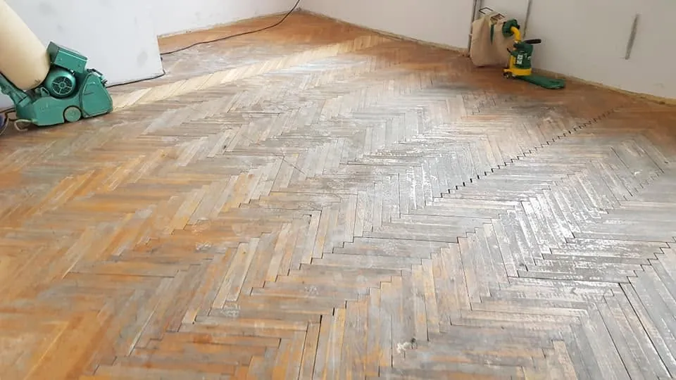

01
Cyklinowanie bezpyłowe
Zdejmujemy stary lakier, rysy i szarość aż do zdrowego drewna. Maszyna z odciągiem zbiera pył w trakcie szlifowania, więc po pracy nie ścierasz go z każdej półki.
Więcej o cyklinowaniu